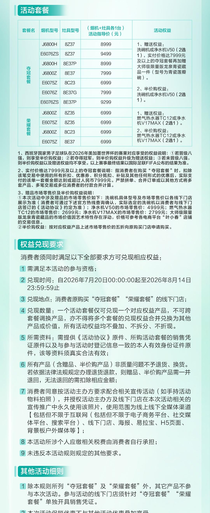
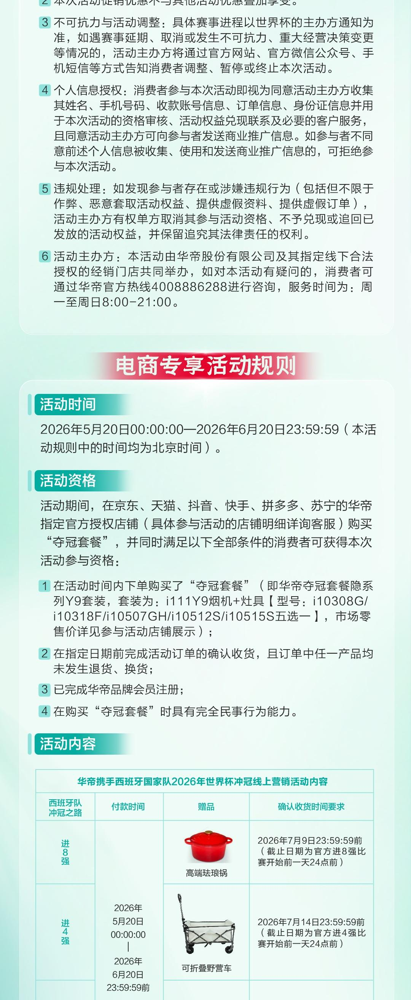
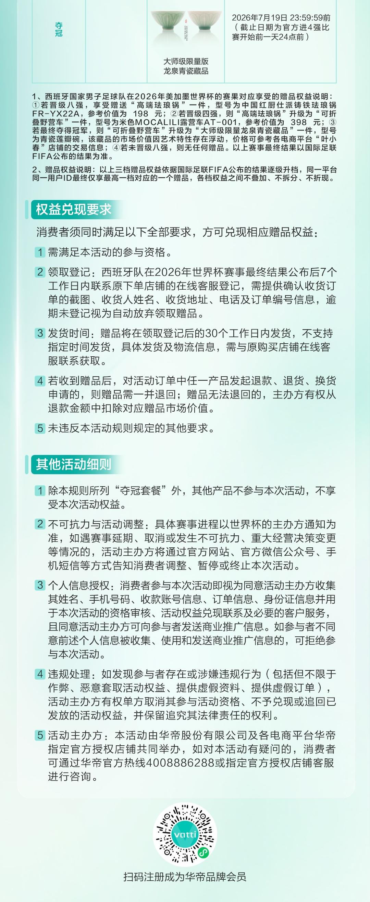

案例发生了什么



2026 年华帝以“西班牙队冲冠”为交易钩子：消费者购买指定夺冠套餐或荣耀套餐后，随西班牙队晋级八强、四强和夺冠，赠品从珐琅锅升级为露营车，最终升级为大师级限量版龙泉青瓷藏品。它延续了华帝 2018 年把赛果写进消费承诺的经典方法，但不再承诺退全款，而是用阶梯赠品控制履约成本与不确定性。
MARKETING KNOWLEDGE ROUTER · 营销知识路由器
营销启发卡
用三张卡片保留最值得记住、讨论和迁移的部分。 卡片底部按主题连接全站相关案例、经典方法与深度文章。
核心动作
先以西班牙国家队中国大陆厨电合作伙伴身份取得球队与球员视觉入口，再把权益落到指定套餐；把晋级八强、四强、夺冠分别对应不同赠品，让赛事进程持续制造可传播节点。
传播与商业机制
以“西班牙国家队合作 / 赛果阶梯礼遇”为资源起点，进入球星/球队/授权内容、电商、门店、大小屏与海外渠道；结果优先观察搜索、到店、商品成交、会员沉淀与重点海外市场认知，不把曝光直接等同于销售。
可复用的方法
赛果营销的资产不是“赌得更大”，而是让规则足够简单、权益足够有感、履约足够可控，并在赛果发生后快速兑现。
适用条件、风险与证据
- 先明确目标是国内动销、出海认知、渠道关系还是授权商品，而不是全部都做。
- 球星或球队的赛果只是放大器，必须准备常态内容和转化出口。
- 对授权范围、地域、肖像和商品库存建立可追溯台账。
核验记录可将已核动作作为内部判断基础；涉及投放规模、销售结果或合作细则时，仍应以品牌、平台或权利方的一手发布为准。 当前记录：已核（华帝官网）；素材状态：已归档 4 张华帝官网活动规则原图。
品牌与权威来源物料
这里只展示可追溯到品牌、权利方、官方账号或明确注明原始出处的真实物料；研究图卡不计入案例图片。

资料与来源
官方资料、结果数据与下一步
已验证事实
- 华帝官网发布《华帝携手西班牙冲冠——2026 世界杯冲冠营销活动规则公布》，并在正文中完整提供 4 张活动规则长图；本页所用 2026 视觉均直接取自该官网正文。
- 线下活动期为 2026 年 5 月 15 日至 7 月 19 日；电商活动期为 5 月 20 日至 6 月 20 日。参与者须购买指定“夺冠套餐”或“荣耀套餐”，并完成会员注册及相应凭证要求。
- 西班牙队晋级八强、四强、夺冠分别对应珐琅锅、可折叠露营车、大师级限量版龙泉青瓷藏品；与 2018 年“退全款”不同，2026 的核心是赛果阶梯赠品。
- 华帝 2018 年合作对象是法国国家队，活动发生在俄罗斯世界杯期间；“法国队夺冠，华帝退全款”不是 1998 年案例。
可追溯的结果
- 2026 官网规则可验证套餐价格、参与区间、权益与兑奖流程，但尚未披露实际参与订单数、赠品领取量、销售增量或活动成本。
- 2018 年中国消费者协会披露：线上符合条件的 7,248 单全部完成退款；线下 7,611 名登记消费者中 7,195 名完成退款；合计完成 14,443 单、金额 6,335.9 万元。该口径用于历史对照，不能当作 2026 结果。
原始来源
- 华帝官网 · 2026-05-17华帝携手西班牙冲冠——2026 世界杯冲冠营销活动规则公布
- 中新经纬 · 2018-07-16华帝“法国队夺冠退全款”真的是稳赚不赔的生意？（含华帝官网、官方微博原图留存）
- 中国消费者协会 / 人民网 · 2018-08-01中消协：华帝退款工作基本完成
- 投资回报Festival · 2019法国队夺冠，华帝退全款（2019 金奖案例）
来源链接优先指向品牌、权利方或持权媒体官方页面；品牌自述数据按原始定义记录，不视作独立审计结果。